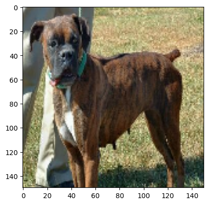
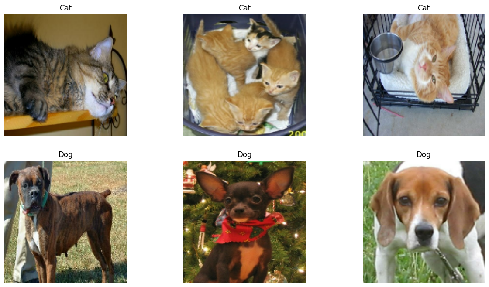
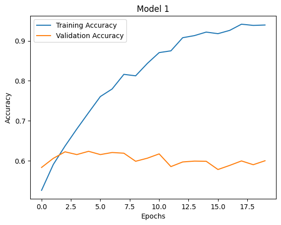
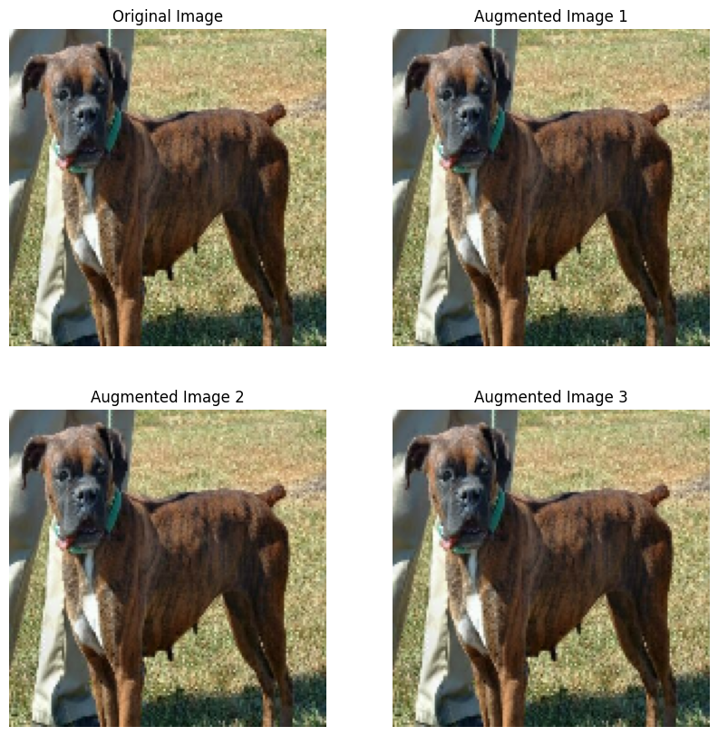
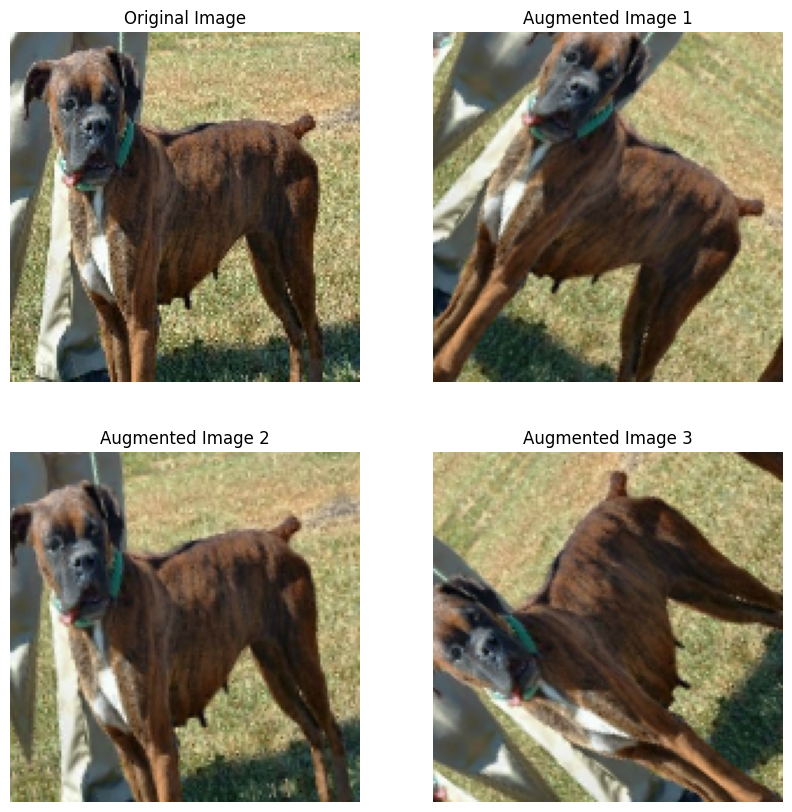
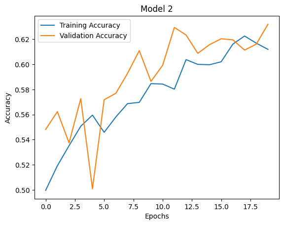
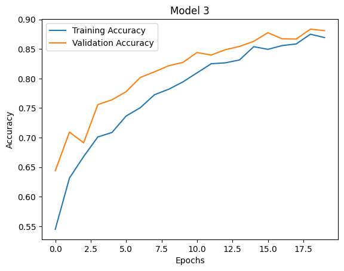
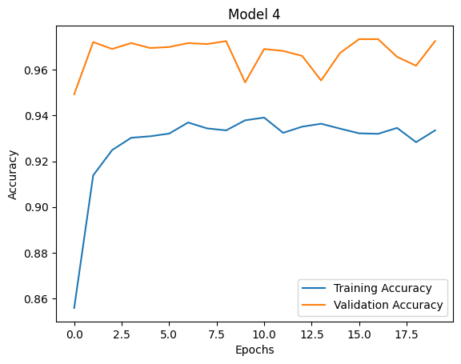

import tensorflow as tf
from tensorflow import keras
import os
from keras import utils, datasets, layers, models
import tensorflow_datasets as tfds
import matplotlib.pyplot as plt
import matplotlib.image as mpimg
import numpy as npPart 1: Introduction
Image classification is a foundational skill in machine learning, and with the dynamic duo of Keras and TensorFlow, the process becomes relatively easy. In this tutorial, we will focus on training a machine learning algorithms to differentiate between cats and dogs from a dataset provided by tensorflow datasets which contains image of cats and dogs.
We will use techniques like data augmentation to enhance the dataset by introducing variations and distortions, helping models learn more robust patterns. Also, we will see how pre-trained models can help us train our own.
Download the necessary libraries:
First, we need to split the dataset into a training, validation, and test set. The training set provides the data on which the model learns patterns and relationships. It typically constitutes the majority of the dataset. Then, the model’s performance is fine-tuned using the validation set, which is smaller but can gauge how well the model generalizes to unseen data. This is important to find issues like overfitting and adjusting parameters. Finally, the test set is the final evaluation, assessing the model’s real-world performance on data it has never encountered during training or validation. The size of the test set is similar to the validation set.
train_ds, validation_ds, test_ds = tfds.load(
"cats_vs_dogs",
# 40% for training, 10% for validation, and 10% for test (the rest unused)
split=["train[:40%]", "train[40%:50%]", "train[50%:60%]"],
as_supervised=True, # Include labels
)
print(f"Number of training samples: {train_ds.cardinality()}")
print(f"Number of validation samples: {validation_ds.cardinality()}")
print(f"Number of test samples: {test_ds.cardinality()}")Downloading and preparing dataset 786.67 MiB (download: 786.67 MiB, generated: 1.04 GiB, total: 1.81 GiB) to /root/tensorflow_datasets/cats_vs_dogs/4.0.1...
Dataset cats_vs_dogs downloaded and prepared to /root/tensorflow_datasets/cats_vs_dogs/4.0.1. Subsequent calls will reuse this data.
Number of training samples: 9305
Number of validation samples: 2326
Number of test samples: 2326WARNING:absl:1738 images were corrupted and were skippedNext, we need to make sure that all of the images are the same shape and size so we resize all of them to the dimensions (150, 150).
resize_fn = keras.layers.Resizing(150, 150)
train_ds = train_ds.map(lambda x, y: (resize_fn(x), y))
validation_ds = validation_ds.map(lambda x, y: (resize_fn(x), y))
test_ds = test_ds.map(lambda x, y: (resize_fn(x), y))Next we split the data to be in batches for faster processing time. We also have to be careful not to run this block more than once or else it will mess up the shape of the dataset. I ran it twice and it made the shape (64, 64, 150, 150, 3) for the images and (64, 64) for the labels, which is not what we want.
from tensorflow import data as tf_data
batch_size = 64
train_ds = train_ds.batch(batch_size).prefetch(tf_data.AUTOTUNE).cache()
validation_ds = validation_ds.batch(batch_size).prefetch(tf_data.AUTOTUNE).cache()
test_ds = test_ds.batch(batch_size).prefetch(tf_data.AUTOTUNE).cache()Part 2: Visualize the Dataset
To get a better idea of what the images look like we want to create a grid of the images using the function bellow with their associated labels (0 for cat, 1 for dog).
class_names = { 0: 'Cat', 1: 'Dog'}To get an idea of how to visualize a single image we have to call a single image using [ ] brackets as shown bellow. A single batch has a shape (64, 64, 150, 150, 3) with 64 images and 64 labels where each image is of dimension 150 x 150.
# Assuming `dataset` is your TensorFlow dataset with shape (64, 150, 150, 3)
for batch in train_ds.take(1):
# Select the first image from the first batch
single_image = batch[0].numpy().astype("uint8")
# Remove the batch dimension
single_image = single_image[0]
# Display the image
plt.imshow(single_image)
plt.show()
Next, the visualize_dataset function is designed to provide a visual representation of images from the given dataset. This function is particularly useful when working with image classification datasets, where each image is associated with a specific label as we described above.The function iterates through the first subset of the dataset (assumed to be a batch). It extracts images and labels from the batch, converting images to NumPy arrays and ensuring they are of type “uint8” (unsigned 8-bit integers). The function then loops through the labels to separate images into two categories cats and dogs. Then it collects three images of cats and dogs for the 2x3 visualization. Then, the function iterates through the two categories and creates a plot using matplotlib.
def visualize_dataset(dataset, class_names):
plt.figure(figsize=(15, 8))
for subset in dataset.take(1):
# Select the first image from the first batch
images = batch[0].numpy().astype("uint8")
labels = batch[1].numpy()
i = 0
d_count = 0
c_count = 0
cats = []
dogs = []
while c_count < 3:
if labels [i] == 0:
cats.append(images[i])
c_count += 1
i += 1
i = 0
while d_count < 3:
if labels [i] == 1:
dogs.append(images[i])
d_count += 1
i += 1
for i in range(3):
ax = plt.subplot(2, 3, i + 1)
plt.imshow(cats[i])
plt.title(class_names[0])
plt.axis("off")
for i in range(3):
ax = plt.subplot(2, 3, 3 + i + 1)
plt.imshow(dogs[i])
plt.title(class_names[1])
plt.axis("off")
plt.show()visualize_dataset(train_ds, class_names)
Part 3: Lable Frequencies
Now, we want to check the frequency of dogs and cats in the training dataset in case there are a greater amount of cats than dog or vice versa. If this is the case, then we can compensate for the imbalance to better train the model.
labels_iterator= train_ds.unbatch().map(lambda image, label: label).as_numpy_iterator()# Initialize counters
cat_count = 0
dog_count = 0
# Iterate through each array in the iterator
for label_value in labels_iterator:
if label_value == 0:
cat_count += 1
elif label_value == 1:
dog_count += 1
# Display results
print("Number of cat images:", cat_count)
print("Number of dog images:", dog_count)Number of cat images: 4637
Number of dog images: 4668As we can see, there are around the same amount of cat and dog images in the training set. Since the number of cat images is higher than the number of dog images, the baseline model would always predict “cat” and achieve an accuracy equal to the proportion of cat images in the dataset. In this specific example, the baseline accuracy would be:
\[ \text{Baseline Accuracy} = \frac{\text{Number of Cat Images}}{\text{Total Number of Images}} = \frac{4667}{4667 + 4637} = {0.5016...}\]
This calculation would give you the baseline accuracy, and any machine learning model developed for this task should aim to surpass this baseline accuracy to be considered meaningful and effective.
Part 4: First Model
First we will create a simple sequential layer using some of the layers described below. A Sequential Model in Keras is a linear stack of layers that allows you to create models layer by layer in a step-by-step fashion.
Conv2D Layer: Convolutional layers perform the convolution operation, applying filters (also known as kernels) to input data to extract specific features.These layers capture local patterns and detect hierarchical features, allowing the model to learn representations from the input images.
MaxPooling2D Layer: MaxPooling layers downsample the spatial dimensions of the input data by taking the maximum value in each region of the input covered by the pooling window. They reduces the computational complexity of the model while retaining essential features, helping prevent overfitting and improving the model’s robustness.
Flatten Layer: The Flatten layer is used to flatten the input data, converting it from a multidimensional tensor to a one-dimensional vector.
Dense Layer: Dense layers connect every neuron in one layer to every neuron in the next layer. These layers enable the model to learn complex patterns by combining features learned by previous layers. The final dense layer produces the output for classification.
Dropout Layer: Dropout layers randomly set a fraction of input units to zero during training, helping prevent overfitting by introducing a form of regularization.
# Define the model
model1 = models.Sequential([
# Convolutional layers
layers.Conv2D(32, (3, 3), activation='relu', input_shape=(150, 150, 3)),
layers.MaxPooling2D((2, 2)),
layers.Conv2D(64, (3, 3), activation='relu'),
layers.MaxPooling2D((2, 2)),
# Flatten layer
layers.Flatten(),
# Dense layers
layers.Dense(128, activation='relu'),
layers.Dropout(0.5),
layers.Dense(64, activation='relu'),
layers.Dropout(0.3),
# Output layer
layers.Dense(10, activation='softmax')
])After defining the model we need to compile it and the fit it to the training data.
model1.compile(optimizer='adam',
loss=keras.losses.SparseCategoricalCrossentropy(from_logits=True),
metrics=['accuracy'])
history = model1.fit(train_ds,
epochs=20,
validation_data=validation_ds)Epoch 1/20
146/146 [==============================] - 15s 55ms/step - loss: 13.6908 - accuracy: 0.5256 - val_loss: 0.6984 - val_accuracy: 0.5830
Epoch 2/20
146/146 [==============================] - 5s 33ms/step - loss: 0.7555 - accuracy: 0.5904 - val_loss: 0.7573 - val_accuracy: 0.6058
Epoch 3/20
146/146 [==============================] - 5s 34ms/step - loss: 0.6809 - accuracy: 0.6366 - val_loss: 0.6557 - val_accuracy: 0.6221
Epoch 4/20
146/146 [==============================] - 5s 33ms/step - loss: 0.6158 - accuracy: 0.6793 - val_loss: 0.6656 - val_accuracy: 0.6152
Epoch 5/20
146/146 [==============================] - 5s 34ms/step - loss: 0.5601 - accuracy: 0.7203 - val_loss: 0.6888 - val_accuracy: 0.6234
Epoch 6/20
146/146 [==============================] - 5s 33ms/step - loss: 0.5018 - accuracy: 0.7606 - val_loss: 0.7171 - val_accuracy: 0.6152
Epoch 7/20
146/146 [==============================] - 5s 35ms/step - loss: 0.4618 - accuracy: 0.7795 - val_loss: 0.7934 - val_accuracy: 0.6204
Epoch 8/20
146/146 [==============================] - 5s 36ms/step - loss: 0.4158 - accuracy: 0.8161 - val_loss: 0.8343 - val_accuracy: 0.6187
Epoch 9/20
146/146 [==============================] - 5s 36ms/step - loss: 0.4115 - accuracy: 0.8125 - val_loss: 0.8546 - val_accuracy: 0.5985
Epoch 10/20
146/146 [==============================] - 5s 33ms/step - loss: 0.3635 - accuracy: 0.8436 - val_loss: 0.9108 - val_accuracy: 0.6062
Epoch 11/20
146/146 [==============================] - 5s 34ms/step - loss: 0.3111 - accuracy: 0.8706 - val_loss: 0.9991 - val_accuracy: 0.6169
Epoch 12/20
146/146 [==============================] - 5s 33ms/step - loss: 0.2890 - accuracy: 0.8750 - val_loss: 1.1080 - val_accuracy: 0.5851
Epoch 13/20
146/146 [==============================] - 5s 36ms/step - loss: 0.2342 - accuracy: 0.9079 - val_loss: 1.1989 - val_accuracy: 0.5967
Epoch 14/20
146/146 [==============================] - 5s 34ms/step - loss: 0.2323 - accuracy: 0.9132 - val_loss: 1.1892 - val_accuracy: 0.5989
Epoch 15/20
146/146 [==============================] - 5s 33ms/step - loss: 0.2011 - accuracy: 0.9220 - val_loss: 1.3048 - val_accuracy: 0.5985
Epoch 16/20
146/146 [==============================] - 5s 34ms/step - loss: 0.2209 - accuracy: 0.9180 - val_loss: 1.4371 - val_accuracy: 0.5778
Epoch 17/20
146/146 [==============================] - 5s 34ms/step - loss: 0.1949 - accuracy: 0.9263 - val_loss: 1.5856 - val_accuracy: 0.5881
Epoch 18/20
146/146 [==============================] - 5s 36ms/step - loss: 0.1635 - accuracy: 0.9418 - val_loss: 1.7272 - val_accuracy: 0.5993
Epoch 19/20
146/146 [==============================] - 5s 34ms/step - loss: 0.1665 - accuracy: 0.9387 - val_loss: 1.6080 - val_accuracy: 0.5899
Epoch 20/20
146/146 [==============================] - 5s 34ms/step - loss: 0.1677 - accuracy: 0.9397 - val_loss: 1.5196 - val_accuracy: 0.5997/usr/local/lib/python3.10/dist-packages/keras/src/backend.py:5727: UserWarning: "`sparse_categorical_crossentropy` received `from_logits=True`, but the `output` argument was produced by a Softmax activation and thus does not represent logits. Was this intended?
output, from_logits = _get_logits(By plotting the training and validation accuracy, we can better visualize the performance of the model and possible overfitting issues.
plt.plot(history.history['accuracy'], label='Training Accuracy')
plt.plot(history.history['val_accuracy'], label='Validation Accuracy')
plt.xlabel('Epochs')
plt.ylabel('Accuracy')
plt.title('Model 1')
plt.legend()
plt.show()
Validation Accuracy Observation: The accuracy of my model fluctuated during training, reaching around 62% at its peak.
Comparison to Baseline: I achieved a validation accuracy slightly better than the baseline of 50%. While there is an improvement, further optimization can be explored.
Overfitting Observation: There are signs of overfitting as the training accuracy (around 92.5%) is substantially higher than the validation accuracy (around 59.7%). To mitigate overfitting, additional techniques such as increasing dropout rates, reducing model complexity, or incorporating regularization methods could be explored. Regularization methods like L2 regularization or data augmentation might be useful in this scenario.
Part 4: Second Model
As we saw in part 4, a sequential model as defined was not much more accurate than the baseline. In order to improve the accuracy we can include some data augmentation layers. Data augmentation is when we include modified copies of the same image in the training set; for example, the image rotated or mirrored.
def augmented(train_ds, data_augmentation):
# Display original and augmented images
plt.figure(figsize=(10, 10))
for image, _ in train_ds.take(1):
original_image = image[0]
ax = plt.subplot(2, 2, 1)
plt.imshow(original_image / 255)
plt.axis('off')
ax.set_title('Original Image')
# Display augmented images
for i in range(2, 5):
ax = plt.subplot(2, 2, i)
augmented_image = data_augmentation(tf.expand_dims(original_image, 0))
plt.imshow(augmented_image[0] / 255)
plt.axis('off')
ax.set_title(f'Augmented Image {i - 1}')
plt.show()First let’s take a look at the images produced by Random Flip:
data_augmentation1 = tf.keras.Sequential([
tf.keras.layers.RandomFlip('horizontal'),
])
augmented(train_ds, data_augmentation1)
Then at the images produced by RandomRotation:
data_augmentation2 = tf.keras.Sequential([
tf.keras.layers.RandomRotation(0.2),
])
augmented(train_ds, data_augmentation2)
As we can see these layers in combination will add some diversity to the dataset, so let’s create new model similar to our first that include these layers and see if it performs better.
model2 = models.Sequential([
layers.RandomFlip("horizontal", input_shape=(150, 150, 3)),
layers.RandomRotation(0.2),
# Other layers (similar to model1)
layers.Conv2D(32, (3, 3), activation='relu'),
layers.MaxPooling2D((2, 2)),
layers.Conv2D(64, (3, 3), activation='relu'),
layers.MaxPooling2D((2, 2)),
layers.Flatten(),
layers.Dense(128, activation='relu'),
layers.Dropout(0.5),
layers.Dense(64, activation='relu'),
layers.Dropout(0.3),
layers.Dense(10, activation='softmax')
])Now compile and fit the model to the training data:
# Compile the model
model2.compile(optimizer='adam',
loss='sparse_categorical_crossentropy',
metrics=['accuracy'])
# Assuming you have train_ds and validation datasets
history_model2 = model2.fit(train_ds,
epochs=20,
validation_data=validation_ds)Epoch 1/20
146/146 [==============================] - 7s 37ms/step - loss: 30.6067 - accuracy: 0.4996 - val_loss: 0.8345 - val_accuracy: 0.5482
Epoch 2/20
146/146 [==============================] - 5s 36ms/step - loss: 0.8585 - accuracy: 0.5192 - val_loss: 0.8028 - val_accuracy: 0.5623
Epoch 3/20
146/146 [==============================] - 5s 35ms/step - loss: 0.7927 - accuracy: 0.5352 - val_loss: 0.7837 - val_accuracy: 0.5374
Epoch 4/20
146/146 [==============================] - 5s 36ms/step - loss: 0.7638 - accuracy: 0.5507 - val_loss: 0.7010 - val_accuracy: 0.5727
Epoch 5/20
146/146 [==============================] - 5s 35ms/step - loss: 0.7311 - accuracy: 0.5596 - val_loss: 2.0641 - val_accuracy: 0.5009
Epoch 6/20
146/146 [==============================] - 5s 36ms/step - loss: 0.7474 - accuracy: 0.5458 - val_loss: 0.6861 - val_accuracy: 0.5718
Epoch 7/20
146/146 [==============================] - 5s 35ms/step - loss: 0.7102 - accuracy: 0.5581 - val_loss: 0.6791 - val_accuracy: 0.5770
Epoch 8/20
146/146 [==============================] - 6s 38ms/step - loss: 0.7023 - accuracy: 0.5687 - val_loss: 0.6731 - val_accuracy: 0.5929
Epoch 9/20
146/146 [==============================] - 5s 36ms/step - loss: 0.6982 - accuracy: 0.5697 - val_loss: 0.6600 - val_accuracy: 0.6109
Epoch 10/20
146/146 [==============================] - 5s 35ms/step - loss: 0.6894 - accuracy: 0.5846 - val_loss: 0.6720 - val_accuracy: 0.5864
Epoch 11/20
146/146 [==============================] - 5s 36ms/step - loss: 0.6887 - accuracy: 0.5843 - val_loss: 0.6677 - val_accuracy: 0.5993
Epoch 12/20
146/146 [==============================] - 5s 35ms/step - loss: 0.6879 - accuracy: 0.5802 - val_loss: 0.6554 - val_accuracy: 0.6294
Epoch 13/20
146/146 [==============================] - 5s 36ms/step - loss: 0.6768 - accuracy: 0.6038 - val_loss: 0.6553 - val_accuracy: 0.6234
Epoch 14/20
146/146 [==============================] - 5s 35ms/step - loss: 0.6799 - accuracy: 0.6000 - val_loss: 0.6595 - val_accuracy: 0.6088
Epoch 15/20
146/146 [==============================] - 6s 38ms/step - loss: 0.6719 - accuracy: 0.5997 - val_loss: 0.6608 - val_accuracy: 0.6156
Epoch 16/20
146/146 [==============================] - 5s 35ms/step - loss: 0.6723 - accuracy: 0.6020 - val_loss: 0.6576 - val_accuracy: 0.6204
Epoch 17/20
146/146 [==============================] - 5s 35ms/step - loss: 0.6669 - accuracy: 0.6161 - val_loss: 0.6610 - val_accuracy: 0.6195
Epoch 18/20
146/146 [==============================] - 5s 36ms/step - loss: 0.6622 - accuracy: 0.6226 - val_loss: 0.6590 - val_accuracy: 0.6113
Epoch 19/20
146/146 [==============================] - 5s 35ms/step - loss: 0.6629 - accuracy: 0.6169 - val_loss: 0.6552 - val_accuracy: 0.6161
Epoch 20/20
146/146 [==============================] - 5s 36ms/step - loss: 0.6681 - accuracy: 0.6119 - val_loss: 0.6489 - val_accuracy: 0.6320# Plot the accuracy history
plt.plot(history_model2.history['accuracy'], label='Training Accuracy')
plt.plot(history_model2.history['val_accuracy'], label='Validation Accuracy')
plt.xlabel('Epochs')
plt.ylabel('Accuracy')
plt.title('Model 2')
plt.legend()
plt.show()
Validation Accuracy Observation: The accuracy of model2 fluctuated during training, reaching around 67% at its peak.
Comparison to Baseline and Model1: The model2 achieved a validation accuracy of approximately 67%, which is an improvement compared to the baseline of 50%. Model2’s validation accuracy (67%) is also higher than that of Model1 (approximately 60%). This indicates that the inclusion of data augmentation layers, such as RandomFlip and RandomRotation, in Model2 has contributed to better generalization, resulting in improved performance on the validation set.
Underfitting Observation: The training accuracy is around 62%, and the validation accuracy is around 67%. This suggests that the model may not have fully learned the patterns in the training data, and further adjustments to the model complexity or training parameters may be considered to address underfitting.
Part 5: Third Model
The original data has pixels with RGB values between 0 and 255, but many models will train faster with RGB values normalized between 0 and 1, or possibly between -1 and 1. If we handle the scaling prior to the training process, we can spend more of our training energy handling actual signal in the data and less energy having the weights adjust to the data scale.
i = keras.Input(shape=(150, 150, 3))
# The pixel values have the range of (0, 255), but many models will work better if rescaled to (-1, 1.)
# outputs: `(inputs * scale) + offset`
scale_layer = keras.layers.Rescaling(scale=1 / 127.5, offset=-1)
x = scale_layer(i)
preprocessor = keras.Model(inputs = i, outputs = x)Now, let’s create our third model including the preprocessor defined above and the augmentation layers from Model2:
model3 = models.Sequential([
preprocessor,
# augmentation layers
layers.RandomFlip("horizontal", input_shape=(150, 150, 3)),
layers.RandomRotation(0.2),
layers.Conv2D(64, (3, 3), activation='LeakyReLU'),
layers.MaxPooling2D((2, 2)),
layers.Conv2D(128, (3, 3), activation='relu'),
layers.MaxPooling2D((2, 2)),
layers.Conv2D(256, (3, 3), activation='LeakyReLU'),
layers.MaxPooling2D((2, 2)),
layers.Conv2D(512, (3, 3), activation='relu'),
layers.MaxPooling2D((2, 2)),
layers.Flatten(),
layers.Dense(1024, activation='relu'),
layers.Dropout(0.5),
layers.Dense(512, activation='LeakyReLU'),
layers.Dropout(0.3),
layers.Dense(10, activation='softmax')
])# Compile the model
model3.compile(optimizer='adam',
loss='sparse_categorical_crossentropy',
metrics=['accuracy'])
# Assuming you have train_ds and validation datasets
history_model3 = model3.fit(train_ds,
epochs=20,
validation_data=validation_ds)Epoch 1/20
146/146 [==============================] - 23s 126ms/step - loss: 0.7978 - accuracy: 0.5451 - val_loss: 0.6467 - val_accuracy: 0.6440
Epoch 2/20
146/146 [==============================] - 17s 117ms/step - loss: 0.6438 - accuracy: 0.6317 - val_loss: 0.5906 - val_accuracy: 0.7094
Epoch 3/20
146/146 [==============================] - 17s 117ms/step - loss: 0.6120 - accuracy: 0.6680 - val_loss: 0.6085 - val_accuracy: 0.6913
Epoch 4/20
146/146 [==============================] - 17s 119ms/step - loss: 0.5734 - accuracy: 0.7011 - val_loss: 0.5141 - val_accuracy: 0.7558
Epoch 5/20
146/146 [==============================] - 18s 121ms/step - loss: 0.5674 - accuracy: 0.7088 - val_loss: 0.5014 - val_accuracy: 0.7640
Epoch 6/20
146/146 [==============================] - 18s 122ms/step - loss: 0.5259 - accuracy: 0.7366 - val_loss: 0.4718 - val_accuracy: 0.7777
Epoch 7/20
146/146 [==============================] - 18s 120ms/step - loss: 0.5026 - accuracy: 0.7507 - val_loss: 0.4399 - val_accuracy: 0.8018
Epoch 8/20
146/146 [==============================] - 19s 128ms/step - loss: 0.4816 - accuracy: 0.7726 - val_loss: 0.4284 - val_accuracy: 0.8113
Epoch 9/20
146/146 [==============================] - 17s 120ms/step - loss: 0.4671 - accuracy: 0.7818 - val_loss: 0.4052 - val_accuracy: 0.8216
Epoch 10/20
146/146 [==============================] - 18s 120ms/step - loss: 0.4399 - accuracy: 0.7942 - val_loss: 0.3989 - val_accuracy: 0.8272
Epoch 11/20
146/146 [==============================] - 18s 120ms/step - loss: 0.4157 - accuracy: 0.8096 - val_loss: 0.3489 - val_accuracy: 0.8439
Epoch 12/20
146/146 [==============================] - 18s 120ms/step - loss: 0.3912 - accuracy: 0.8249 - val_loss: 0.3832 - val_accuracy: 0.8396
Epoch 13/20
146/146 [==============================] - 18s 120ms/step - loss: 0.3876 - accuracy: 0.8265 - val_loss: 0.3481 - val_accuracy: 0.8487
Epoch 14/20
146/146 [==============================] - 17s 120ms/step - loss: 0.3707 - accuracy: 0.8314 - val_loss: 0.3360 - val_accuracy: 0.8543
Epoch 15/20
146/146 [==============================] - 18s 121ms/step - loss: 0.3362 - accuracy: 0.8538 - val_loss: 0.3201 - val_accuracy: 0.8629
Epoch 16/20
146/146 [==============================] - 18s 121ms/step - loss: 0.3464 - accuracy: 0.8493 - val_loss: 0.3033 - val_accuracy: 0.8775
Epoch 17/20
146/146 [==============================] - 18s 121ms/step - loss: 0.3349 - accuracy: 0.8557 - val_loss: 0.3154 - val_accuracy: 0.8672
Epoch 18/20
146/146 [==============================] - 18s 120ms/step - loss: 0.3177 - accuracy: 0.8585 - val_loss: 0.3163 - val_accuracy: 0.8667
Epoch 19/20
146/146 [==============================] - 18s 120ms/step - loss: 0.2919 - accuracy: 0.8749 - val_loss: 0.3044 - val_accuracy: 0.8835
Epoch 20/20
146/146 [==============================] - 18s 120ms/step - loss: 0.3015 - accuracy: 0.8692 - val_loss: 0.2917 - val_accuracy: 0.8809plt.plot(history_model3.history['accuracy'], label='Training Accuracy')
plt.plot(history_model3.history['val_accuracy'], label='Validation Accuracy')
plt.xlabel('Epochs')
plt.ylabel('Accuracy')
plt.title('Model 3')
plt.legend()
plt.show()
Validation Accuracy: The validation accuracy of model3 during training is 88.09%.
Comparison to Model1: Model3’s validation accuracy is significantly higher than the accuracy achieved with model1, which had a validation accuracy of 68.2%. This indicates a notable improvement in model performance.
Overfitting Observation: While there is still a slight gap between training and validation accuracy, it is significantly reduced compared to model1. Model3 demonstrates improved generalization to unseen data, suggesting reduced overfitting.
Part 6: Fourth Model
Many people have attempted to classify images in the past and have worked out models for similar situations, so we can also test these on our model. First, we need to access a pre-existing “base model”, incorporate it into a full model for our current task, and then train that model. The preexisting model we will use is MobileNetV3Large and configure it as a layer in our model.
IMG_SHAPE = (150, 150, 3)
base_model = keras.applications.MobileNetV3Large(input_shape=(150,150,3),
include_top=False,
weights='imagenet')
base_model.trainable = False
i = keras.Input(shape=IMG_SHAPE)
x = base_model(i, training = False)
base_model_layer = keras.Model(inputs = i, outputs = x)WARNING:tensorflow:`input_shape` is undefined or non-square, or `rows` is not 224. Weights for input shape (224, 224) will be loaded as the default.Now, let’s define our fourth model with the augmentation layers from before but using the new base_model_layer and a few simple layers.
model4 = models.Sequential([
# augmentation layers
layers.RandomFlip("horizontal", input_shape=(150, 150, 3)),
layers.RandomRotation(0.2),
base_model_layer,
layers.GlobalMaxPooling2D(),
layers.Dropout(0.2),
layers.Dense(2, activation='softmax'), # outputs the final classification
])# Compile the model
model4.compile(optimizer='adam',
loss='sparse_categorical_crossentropy',
metrics=['accuracy'])After compiling the model we can view it’s details using the summary function.
model4.summary()Model: "sequential_9"
_________________________________________________________________
Layer (type) Output Shape Param #
=================================================================
random_flip_5 (RandomFlip) (None, 150, 150, 3) 0
random_rotation_5 (RandomR (None, 150, 150, 3) 0
otation)
model_2 (Functional) (None, 5, 5, 960) 2996352
global_max_pooling2d (Glob (None, 960) 0
alMaxPooling2D)
dropout_14 (Dropout) (None, 960) 0
dense_21 (Dense) (None, 2) 1922
=================================================================
Total params: 2998274 (11.44 MB)
Trainable params: 1922 (7.51 KB)
Non-trainable params: 2996352 (11.43 MB)
_________________________________________________________________history_model4 = model4.fit(train_ds,
epochs=20,
validation_data=validation_ds)Epoch 1/20
146/146 [==============================] - 16s 71ms/step - loss: 1.4050 - accuracy: 0.8559 - val_loss: 0.4345 - val_accuracy: 0.9493
Epoch 2/20
146/146 [==============================] - 6s 44ms/step - loss: 0.7502 - accuracy: 0.9138 - val_loss: 0.2115 - val_accuracy: 0.9721
Epoch 3/20
146/146 [==============================] - 7s 45ms/step - loss: 0.5701 - accuracy: 0.9249 - val_loss: 0.2074 - val_accuracy: 0.9690
Epoch 4/20
146/146 [==============================] - 6s 44ms/step - loss: 0.5094 - accuracy: 0.9303 - val_loss: 0.1844 - val_accuracy: 0.9716
Epoch 5/20
146/146 [==============================] - 7s 45ms/step - loss: 0.4405 - accuracy: 0.9309 - val_loss: 0.2069 - val_accuracy: 0.9695
Epoch 6/20
146/146 [==============================] - 6s 43ms/step - loss: 0.4494 - accuracy: 0.9321 - val_loss: 0.1849 - val_accuracy: 0.9699
Epoch 7/20
146/146 [==============================] - 6s 44ms/step - loss: 0.3517 - accuracy: 0.9369 - val_loss: 0.1731 - val_accuracy: 0.9716
Epoch 8/20
146/146 [==============================] - 7s 45ms/step - loss: 0.3356 - accuracy: 0.9343 - val_loss: 0.1214 - val_accuracy: 0.9712
Epoch 9/20
146/146 [==============================] - 6s 43ms/step - loss: 0.3250 - accuracy: 0.9335 - val_loss: 0.1176 - val_accuracy: 0.9725
Epoch 10/20
146/146 [==============================] - 6s 43ms/step - loss: 0.2862 - accuracy: 0.9379 - val_loss: 0.2065 - val_accuracy: 0.9544
Epoch 11/20
146/146 [==============================] - 6s 44ms/step - loss: 0.2800 - accuracy: 0.9391 - val_loss: 0.1199 - val_accuracy: 0.9690
Epoch 12/20
146/146 [==============================] - 6s 44ms/step - loss: 0.3356 - accuracy: 0.9324 - val_loss: 0.1601 - val_accuracy: 0.9682
Epoch 13/20
146/146 [==============================] - 6s 44ms/step - loss: 0.2712 - accuracy: 0.9351 - val_loss: 0.1385 - val_accuracy: 0.9660
Epoch 14/20
146/146 [==============================] - 6s 42ms/step - loss: 0.2485 - accuracy: 0.9364 - val_loss: 0.1757 - val_accuracy: 0.9553
Epoch 15/20
146/146 [==============================] - 6s 43ms/step - loss: 0.2672 - accuracy: 0.9342 - val_loss: 0.1276 - val_accuracy: 0.9673
Epoch 16/20
146/146 [==============================] - 6s 44ms/step - loss: 0.2988 - accuracy: 0.9322 - val_loss: 0.1017 - val_accuracy: 0.9733
Epoch 17/20
146/146 [==============================] - 7s 45ms/step - loss: 0.2871 - accuracy: 0.9320 - val_loss: 0.1249 - val_accuracy: 0.9733
Epoch 18/20
146/146 [==============================] - 6s 44ms/step - loss: 0.2589 - accuracy: 0.9346 - val_loss: 0.1283 - val_accuracy: 0.9656
Epoch 19/20
146/146 [==============================] - 6s 43ms/step - loss: 0.3059 - accuracy: 0.9283 - val_loss: 0.1895 - val_accuracy: 0.9617
Epoch 20/20
146/146 [==============================] - 6s 43ms/step - loss: 0.2999 - accuracy: 0.9335 - val_loss: 0.1299 - val_accuracy: 0.9725plt.plot(history_model4.history['accuracy'], label='Training Accuracy')
plt.plot(history_model4.history['val_accuracy'], label='Validation Accuracy')
plt.xlabel('Epochs')
plt.ylabel('Accuracy')
plt.title('Model 4')
plt.legend()
plt.show()
Validation Accuracy of Model4 During Training: The validation accuracy of model4 during training consistently exceeded 97%.
Comparison to Model1: Model4’s validation accuracy is significantly higher than the accuracy achieved with model1, which struggled to surpass 80%. Model4’s superior performance suggests that leveraging a pre-existing model (MobileNetV3Large) and fine-tuning it for the specific task can lead to better results.
Overfitting in Model4: Overfitting appears to be minimal in model4, as the validation accuracy closely tracks the training accuracy. The incorporation of a pre-trained base model likely contributed to this improved generalization.
Conclusion
As we can see, model4 is the most accurate model so we will test it on the test data for our final step:
test_loss, test_accuracy = model4.evaluate(test_ds)
print(f'Test Accuracy: {test_accuracy * 100:.2f}%')37/37 [==============================] - 3s 77ms/step - loss: 0.1467 - accuracy: 0.9652
Test Accuracy: 96.52%Each model brought its own set of techniques and improvements, showcasing the versatility of deep learning in computer vision tasks. The final model has an accuracy of 96.5%.
In conclusion, these models emphasized the significance of data preprocessing, architectural choices, and the influence of transfer learning. The flexibility of Keras and TensorFlow allowed us to experiment, iterate, and build a good image classification model.